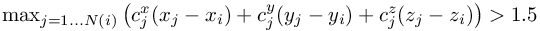
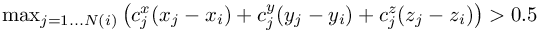
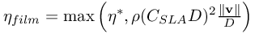
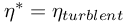
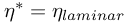

Simulate with complex geometries and complex physics
DEBUG_GeneralParameter
General list of debug parameters at the developpers disposal
for development only
DEBUG_GeneralParameter = (1.0, 2.0, 3.0, ...)
Default: DEBUG_GeneralParameter = 0
Currently involved: - DEBUG_GeneralParameter(1)...DEBUG_GeneralParameter(4) :: testing for DIFFOP_Version=10
- DEBUG_GeneralParameter(5) :: testing COMP_GradtEtaGrad_Version=%GradtEtaGrad_Identity%
- DEBUG_GeneralParameter(7) = -1 :: switch off special velocity correction at free surfaces
- DEBUG_GeneralParameter(8) = -1 :: switch off special re-interpolation of newly created free surface points
- DEBUG_GeneralParameter(9) = 1.5 (default=1000) :: DIFFOP_Version=9: for point "i", step back from order=3 to order=2 if  1.5" class="latex" border="0">
- DEBUG_GeneralParameter(10) = 0.5 (default=1000) :: DIFFOP_Version=9: for point "i", step back from order=2 to order=1 if  0.5" class="latex" border="0">
- DEBUG_GeneralParameter(11) = 0.1 (deault=0.0) :: Smagorinsky-Lilly-ansatz for viscosity (SLA) in degenerated phases/films: , with film thickness, if then , else 
- DEBUG_GeneralParameter(12) = 1.5 (default=1000) :: DIFFOP_Version=9: safety threshold for interior points (TODO Tobias)
- DEBUG_GeneralParameter(13) = 0.05 (default=0.1) :: DIFFOP_Version=9: numerical differentiation step size D (relative to h): c_x = (c_0(x+D)-c_0(x-D))/(2*D), step size D=0.1 (default), can be adapted by this parameter
- DEBUG_GeneralParameter(14) = 8 (default=3) :: DIFFOP_Version=9: interior points: drop from order 3 to order 2, if norm(cx,cy,cz) > DEBUG_GeneralParameter(14), default: 3.0
- DEBUG_GeneralParameter(15) = 25 (default=16) :: DIFFOP_Version=9: boundary points: drop from order 3 to order 2, if norm(cx,cy,cz) > DEBUG_GeneralParameter(15), default: 16.0
- DEBUG_GeneralParameter(16) = 0.1 (default=1.0) :: free surface boundary conditions on velocity: weight for the div(v)=0 condition, default: 1.0
| This item is referenced in: | |
|---|---|
| DEBUG_GeneralParameter | General list of debug parameters at the developpers disposal |
| DIFFOP_Version | version of least squares operators |
| Beta | Release notes for the MESHFREE beta executables |